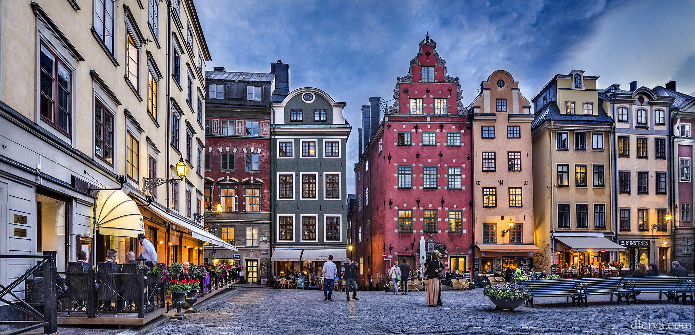

Estocolmo, la vibrante capital de Suecia, está llena de calles empedradas, salpicadas de casas de colores pastel y cafeterías
acogedoras que invitan a pasear y perderse entre sus encantadores barrios. El clima fresco y nítido del norte se suma a
la atmósfera mágica, especialmente durante los meses de verano cuando el sol brilla hasta altas horas de la noche. En
Estocolmo, la historia cobra vida en cada rincón: desde el casco antiguo de Gamla Stan, con sus callejones estrechos y
la majestuosa Catedral de San Nicolás, hasta los modernos museos como el Vasa, que alberga un antiguo buque de guerra
salvado de las profundidades del mar. Y si buscas aventura, ¡no te preocupes! Los parques y áreas verdes abundan en la
ciudad, ofreciendo oportunidades para caminatas, picnics y actividades al aire libre.
Atractivos turísticos
Barrio de Gamla Stan

El Barrio de Gamla Stan, con sus estrechas calles empedradas y coloridos edificios, es el corazón histórico
de Estocolmo. Este encantador barrio medieval alberga numerosas tiendas, restaurantes y cafés, haciéndolo el lugar
perfecto para perderse y sumergirse en la atmósfera única de la ciudad.
Metro de Estocolmo
El Metro de Estocolmo, conocido como "la galería de arte más larga del mundo", es mucho más que un sistema de transporte.
Sus estaciones están decoradas con impresionantes obras de arte, esculturas y murales, convirtiendo cada viaje en
una experiencia cultural única y fascinante.
Museo de Fotografiska
El Museo de Fotografiska es un destino imprescindible para los amantes de la fotografía y las artes visuales.
Este museo contemporáneo exhibe exposiciones fotográficas de renombre internacional y ofrece talleres, conferencias
y eventos que celebran el arte de la imagen en todas sus formas.
Mirador del Monteliusvagen
El Mirador del Monteliusvagen ofrece una vista panorámica espectacular del casco antiguo de Estocolmo,
el lago Mälaren y la isla de Riddarholmen. Es el lugar perfecto para disfrutar de vistas impresionantes y
capturar fotos memorables de la ciudad.
Iglesia Riddarholmen
La Iglesia Riddarholmen, construida en el siglo XIII, es una joya arquitectónica ubicada en la isla de Riddarholmen.
Este lugar sagrado alberga las tumbas de numerosos monarcas suecos y es un importante sitio histórico y cultural de
Estocolmo.
Museo Vasa
El Museo Vasa alberga el único barco del siglo XVII del mundo que se ha conservado en su totalidad: el Vasa.
Este impresionante buque de guerra se hundió en su viaje inaugural en 1628 y fue rescatado en 1961.
El museo ofrece una fascinante mirada a la historia marítima de Suecia y al proceso de preservación del Vasa.
Djurgarden
Djurgarden es una isla situada en el centro de Estocolmo que ofrece un oasis de tranquilidad y naturaleza en la
bulliciosa ciudad. Con hermosos parques, jardines y museos, Djurgarden es el lugar perfecto para relajarse,
disfrutar de un picnic al aire libre y explorar la belleza natural de Estocolmo.
Ayuntamiento de Estocolmo
El Ayuntamiento de Estocolmo es un impresionante edificio de estilo neorrenacentista situado en la isla de
Kungsholmen. Es famoso por su elegante arquitectura, sus salones decorados y sus impresionantes vistas del
lago Mälaren. El Ayuntamiento alberga la Sala Dorada, donde se celebra el banquete de los Premios Nobel cada año.
Palacio de Drottningholm
El Palacio de Drottningholm, ubicado en la isla de Lovön, es un magnífico palacio real que data del siglo XVII.
Es un Patrimonio de la Humanidad de la UNESCO y es conocido por su impresionante arquitectura, sus exquisitos jardines
y su hermosa ubicación junto al lago Mälaren. El palacio es la residencia oficial de la familia real sueca.
Itinerario
Itinerario de 5 días y 4 noches en Estocolmo:
Día 1: Llegada a Estocolmo, exploración del Barrio de Gamla Stan y visita al Mirador del Monteliusvagen
Día 2: Visita al Museo de Fotografiska y paseo por el Metro de Estocolmo
Día 3: Excursión a Djurgarden y visita al Museo Vasa
Día 4: Exploración del Palacio de Drottningholm y visita a la Iglesia Riddarholmen
Día 5: Visita al Ayuntamiento de Estocolmo y tiempo libre para compras y despedida
Costos
Alojamiento: $700
Alimentación: $500
Transporte: $150
Actividades y otros (compras, propinas, etc): $300